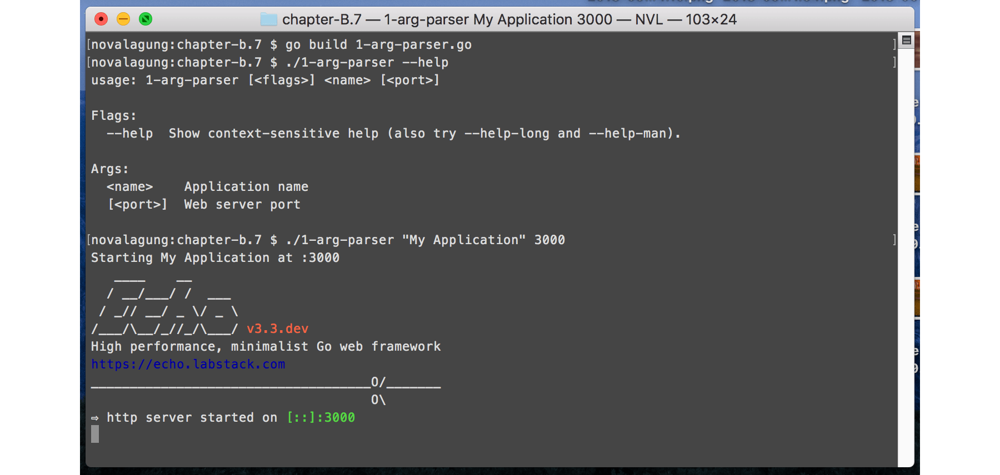
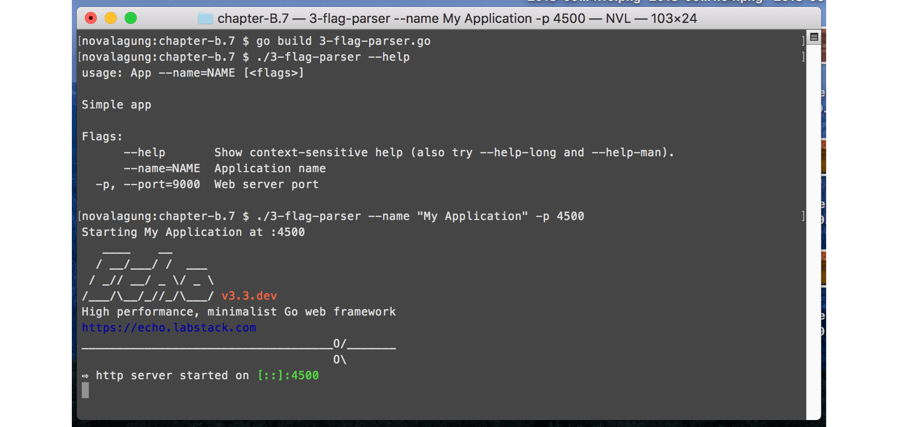
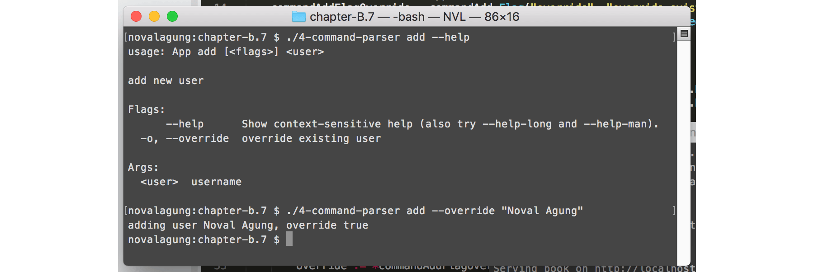
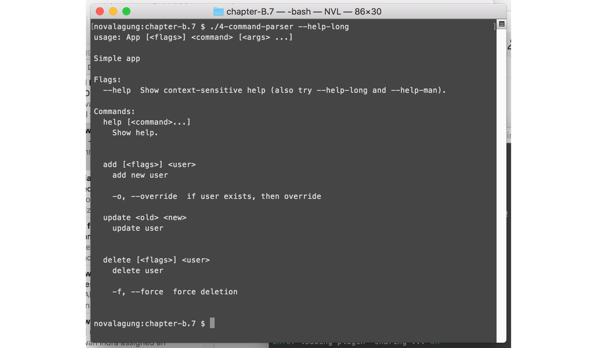

C.7. CLI Flag Parser (Kingpin v2)
Tidak jarang, sebuah aplikasi dalam eksekusinya membutuhkan argumen untuk disisipkan, entah itu mandatory atau tidak. Contohnya seperti berikut.
$ ./main --port=3000
Pada bab ini kita akan belajar cara parsing argumen eksekusi aplikasi. Parsing sebenarnya bisa dilakukan dengan cukup memainkan property os.Args. Tapi pada bab ini kita akan menggunakan 3rd party library github.com/alecthomas/kingpin untuk mempermudah pelaksanaannya.
C.7.1. Parsing Argument
Kita akan buat aplikasi yang bisa menerima bentuk argument seperti berikut.
# $ ./main ArgAppName <ArgPort>
$ ./main "My Application" 4000
Argument ArgAppName mandatory, harus diisi, sedangkan argument ArgPort adalah opsional (ada nilai default-nya).
OK, mari kita praktekan. Buat folder projek baru dengan isi satu buah main file. Siapkan dua buah property untuk menampung appName dan port, dan satu buah fungsi main().
package main
import (
"fmt"
"net/http"
"github.com/labstack/echo"
"gopkg.in/alecthomas/kingpin.v2"
)
var (
argAppName = kingpin.Arg("name", "Application name").Required().String()
argPort = kingpin.Arg("port", "Web server port").Default("9000").Int()
)
func main() {
kingpin.Parse()
// more code here ...
}
Statement kingpin.Arg() digunakan untuk menyiapkan objek penampung argument. Tulis nama argument sebagai parameter pertama, dan deskripsi argument sebagai parameter kedua. 2 Informasi tersebut nantinya akan muncul ketika flag --help digunakan.
Untuk aplikasi yang memerlukan banyak argument, deklarasi variabel penampungnya harus dituliskan berurutan. Seperti contoh di atas argAppName merupakan argument pertama, dan argPort adalah argument kedua.
Chain statement kingpin.Arg() dengan beberapa method yang tersedia sesuai dengan kebutuhan. Berikut adalah penjelasan dari 4 method yang digunakan di atas.
- Method
.Required()membuat argument yang ditulis menjadi mandatory. Jika tidak disisipkan maka muncul error. - Method
.String()menandakan bahwa argument ditampung dalam tipestring. - Method
.Default()digunakan untuk menge-set default value dari argument. Method ini adalah kebalikan dari.Required(). Jika default value di-set maka argument boleh untuk tidak diisi. Objek penampung akan berisi default value. - Method
.Int()menandakan bahwa argument ditampung dalam tipeint.
Perlu diketahui, dalam pendefinisian argument, penulisan statement-nya harus diakhiri dengan pemanggilan method .String(), .Int(), .Bool(), atau method tipe lainnya yang di-support oleh kingpin. Lebih jelasnya silakan cek laman dokumentasi.
Mari kita selesaikan aplikasi, silakan tulis kode berikut dalam fungsi main().
appName := *argAppName
port := fmt.Sprintf(":%d", *argPort)
fmt.Printf("Starting %s at %s", appName, port)
e := echo.New()
e.GET("/index", func(c echo.Context) (err error) {
return c.JSON(http.StatusOK, true)
})
e.Logger.Fatal(e.Start(port))
Objek argument kingpin pasti bertipe pointer, maka dereference objek tersebut untuk mengambil nilai aslinya.
Jalankan aplikasi, cek hasilnya.

Bisa dilihat dari gambar di atas ketika flag --help dipanggil list semua argument muncul.
C.7.2. Penggunaan Kingpin Application Instance
Dari yang sudah kita praktekan di atas, fungsi-fungsi diakses langsung dari package kingpin.
kingpin.Arg("name", "Application name").Required().String()
kingpin.Arg("port", "Web server port").Default("9000").Int()
kingpin.Parse()
Kingpin menyediakan fasilitas untuk membuat -what-so-called- objek kingpin application. Lewat objek ini, semua fungsi yang biasa digunakan (seperti .Arg() atau .Parse()) bisa diakses sebagai method.
Kelebihan menggunakan kingpin application, kita bisa buat custom handler untuk antisipasi error. Pada aplikasi yg sudah dibuat di atas, jika argument yang required tidak disisipkan dalam eksekusi binary, maka aplikasi langsung exit dan error muncul. Error sejenis ini bisa kita override jika menggunakan kingpin application.
Berikut adalah contoh implementasinya.
app = kingpin.New("App", "Simple app")
argAppName = app.Arg("name", "Application name").Required().String()
argPort = app.Arg("port", "Web server port").Default("9000").Int()
command, err := app.Parse(os.Args[1:])
if err != nil {
// handler error here ...
}
Statement kingpin.Arg() diganti dengan app.Arg(). Juga, kingpin.Parse() diganti dengan app.Parse(), dengan pemanggilannya harus disisipkan os.Args[1:].
Manfaatkan objek err kembalian app.Parse() untuk membuat custom error handling. Atau bisa tetap gunakan default custom error handling milik kingpin, caranya dengan membungkus statement app.Parse() ke dalam kingpin.MustParse().
kingpin.MustParse(app.Parse(os.Args[1:]))
C.7.3. Parsing Flag
Flag adalah argument yang lebih terstruktur. Golang sebenarnya sudah menyediakan package flag, isinya API untuk parsing flag.
Contoh argument:
$ ./executable "My application" 4000Contoh flag:
$ ./executable --name="My application" --port=4000 $ ./executable --name "My application" --port 4000 $ ./executable --name "My application" -p 4000
Kita tetap menggunakan kingpin pada bagian ini. Pembuatan flag di kingpin tidak sulit, cukup gunakan .Flag() (tidak menggunakan .Arg()). Contohnya seperti berikut.
app = kingpin.New("App", "Simple app")
flagAppName = app.Flag("name", "Application name").Required().String()
flagPort = app.Flag("port", "Web server port").Short('p').Default("9000").Int()
kingpin.MustParse(app.Parse(os.Args[1:]))
Method .Short() digunakan untuk mendefinisikan short flag. Pada kode di atas, flag port bisa ditulis dalam bentuk --port=value ataupun -p=value.
Penggunaan flag --help akan memunculkan keterangan mendetail tiap-tiap flag.
Flag bisa dikombinasikan dengan argument.

C.7.4. Parsing Command
Command adalah bentuk yang lebih advance dari argument. Banyak command bisa dibuat, pendefinisian flag ataupun argument bisa dilakukan lebih spesifik, untuk masing-masing command.
Di bagian ini kita akan buat sebuah aplikasi untuk simulasi manajemen user. Tiga buah command dipersiapkan dengan skema sebagai berikut.
- Command
add- Flag
--override - Argument
user
- Flag
- Command
update- Argument
old user - Argument
new user
- Argument
- Command
delete- Flag
--force - Argument
user
- Flag
Mari kita praktekan, buat satu folder projek baru. Buat satu file main, isi dengan kode berikut.
package main
import (
"fmt"
"os"
"gopkg.in/alecthomas/kingpin.v2"
)
var app = kingpin.New("App", "Simple app")
Method .Command() digunakan untuk membuat command. Pembuatan argument dan flag masing-masing command bisa dilakukan seperti biasanya, dengan mengakses method .Arg() atau .Flag(), hanya saja pengaksesannya lewat objek command masing-masing. Contoh:
var commandSomething = app.Command("something", "do something")
var commandSomethingArgX = commandSomething.Flag("x", "arg x").String()
var commandSomethingFlagY = commandSomething.Flag("y", "flag y").String()
OK, sekarang buat 3 command sesuai skema yang sudah disepakati di atas.
Command add, beserta flag dan argument-nya.
var commandAdd = app.Command("add", "add new user") var commandAddFlagOverride = commandAdd.Flag("override", "override existing user"). Short('o').Bool() var commandAddArgUser = commandAdd.Arg("user", "username").Required().String()
Command update, beserta argument-nya.
var commandUpdate = app.Command("update", "update user") var commandUpdateArgOldUser = commandUpdate.Arg("old", "old username").Required(). String() var commandUpdateArgNewUser = commandUpdate.Arg("new", "new username").Required(). String()Command delete, beserta flag dan argument-nya.
var commandDelete = app.Command("delete", "delete user") var commandDeleteFlagForce = commandDelete.Flag("force", "force deletion"). Short('f').Bool() var commandDeleteArgUser = commandDelete.Arg("user", "username").Required(). String()
Buat fungsi main, lalu didalamnya siapkan action untuk masing-masing command. Gunakan method .Action() dengan parameter adalah fungsi ber-skema func(*kingpin.ParseContext)error untuk menambahkan action.
Di akhir, tulis statement untuk parsing.
func main() {
commandAdd.Action(func(ctx *kingpin.ParseContext) error {
// more code here ...
})
commandUpdate.Action(func(ctx *kingpin.ParseContext) error {
// more code here ...
})
commandDelete.Action(func(ctx *kingpin.ParseContext) error {
// more code here ...
})
kingpin.MustParse(app.Parse(os.Args[1:]))
}
Berikut adalah isi masing-masing action dari ketiga command di atas.
Action command
add:commandAdd.Action(func(ctx *kingpin.ParseContext) error { user := *commandAddArgUser override := *commandAddFlagOverride fmt.Printf("adding user %s, override %t \n", user, override) return nil })Action command
update:commandUpdate.Action(func(ctx *kingpin.ParseContext) error { oldUser := *commandUpdateArgOldUser newUser := *commandUpdateArgNewUser fmt.Printf("updating user from %s %s \n", oldUser, newUser) return nil })Action command
delete:commandDelete.Action(func(ctx *kingpin.ParseContext) error { user := *commandDeleteArgUser force := *commandDeleteFlagForce fmt.Printf("deleting user %s, force %t \n", user, force) return nil })
Jalankan aplikasi untuk mengetes hasilnya.
Tambahkan flag --help pada pemanggilan command untuk menampilkan help command terpilih.

Atau gunakan --help-long dalam eksekusi binary, untuk menampilkan help yang mendetail (argument dan flag tiap command juga dimunculkan).

C.7.5. Command Action Tanpa Menggunakan .Action()
Nilai balik statement kingpin.MustParse(), kingpin.Parse(), dan nilai balik pertama app.Parse() adalah sama, yaitu informasi command yang ditulis pada saat pemanggilan binary.
Dari informasi command tersebut, bisa kita kembangkan untuk membuat handler masing-masing command. Dengan ini tak perlu menggunakan method .Action() untuk menulis handler command. Contoh prakteknya seperti berikut.
commandInString := kingpin.MustParse(app.Parse(os.Args[1:]))
switch commandInString {
case commandAdd.FullCommand(): // add user
user := *commandAddArgUser
override := *commandAddFlagOverride
fmt.Printf("adding user %s, override %t \n", user, override)
case commandUpdate.FullCommand(): // update user
oldUser := *commandUpdateArgOldUser
newUser := *commandUpdateArgNewUser
fmt.Printf("updating user from %s %s \n", oldUser, newUser)
case commandDelete.FullCommand(): // delete user
user := *commandDeleteArgUser
force := *commandDeleteFlagForce
fmt.Printf("deleting user %s, force %t \n", user, force)
}
C.7.6. Advanced Command Line Application
Pembahasan di atas fokus tentang bagaiamana cara parsing argument, flag, dan command yang disisipkan sewaktu eksekusi aplikasi. Aplikasi yang dieksekusi sendiri bisa berupa command-line-based ataupun web-based.
Jika pembaca ingin membuat aplikasi command line, penggunaan kingpin cukup membantu dalam proses pengembangan, tapi akan lebih mudah lagi jika menggunakan 3rd party library Cobra.
Cobra merupakan library yang didesain khusus untuk development aplikasi berbasis command line. Library ini dibuat oleh author yang juga membuat kingpin.